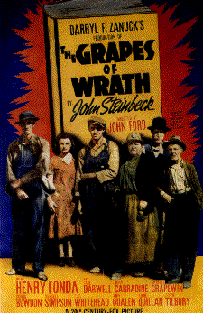
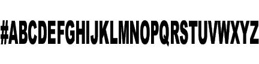

- films -
|  |
. A cultural magazine and a youth magazine round off the programme. The films are available for non-commercial cultural events and for use in teaching. The films are available as 16 mm copies, whilst recent films are also available on video. The films are provided in the German original version with English, French or Spanish subtitles. |
Select the button in front of the film title for a photograph and brief summary. . Today, we possess the most extensive and diverse collection of South Asian films produced by any one Center. These films are available in VHS video format, many also in 16mm format for a significantly reduced price. These films have been specially chosen to present themes from classical Indian traditions.
|  |
. In 1997, the Vladimir Branch was abolished and its holdings all transferred and integrated with those in Krasnogorsk. As the centralized state repository for documentary films, newsreels, and photographs, RGAKFD acquires and preserves copies of complete films and episodes in film footage or documentary outtakes produced by state film studios. The archival holdings are important not only as historical sources but as valuable examples of film and photographic art. The archive retains the artistic productions of such prominent Soviet cinematographers as E. |
|
. Bi Social Film Festival Bi Social Film Festival Bi Matinees Before Every Social. At the March 2000 meeting of the Bi Social, a daring band of just under a dozen people discussed the sheer impossibility of trying to pick out a handful of films from the list we had already generated. To that end, we've been holding a monthly video screening before each Bi Social. If you want to see a particular flick, volunteer to host. |
also look at: http://www.insideout.co.uk/films/index.shtml